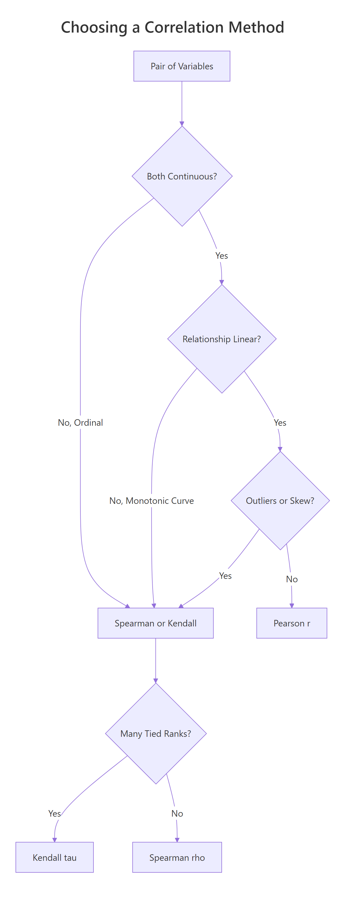
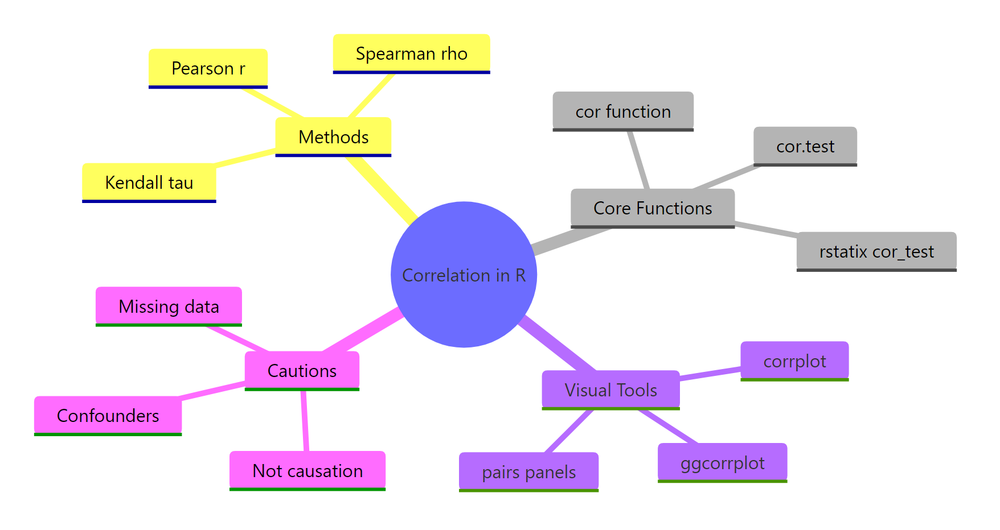

Correlation in R: Choose Between Pearson, Spearman, and Kendall, With Tests
Correlation measures how tightly two variables move together on a scale from -1 to +1. In R you reach for cor() and cor.test(), but the right number depends on your data: Pearson captures linear strength on continuous, well-behaved pairs, Spearman handles non-normal or monotonic curves, and Kendall works best on ranked data with many ties.
What does correlation measure in R?
The quickest way to feel correlation is to compute one. We will ask R whether heavier cars get worse fuel economy using the built-in mtcars dataset. The cor() function returns a single number between -1 and +1: the sign tells you direction, the magnitude tells you strength. Every code block on this page runs in your browser, so you can execute and tweak each one as you read.
The value is -0.87. Negative means that as weight goes up, mileage goes down. The magnitude, 0.87, is close to 1, so the relationship is strong. A useful rule of thumb: |r| above 0.7 is strong, 0.3 to 0.7 is moderate, and below 0.3 is weak. We just confirmed what every driver knows, in one line of R.
Try it: Compute the correlation between mpg and hp (horsepower). Predict the sign first, then check.
Click to reveal solution
Explanation: More horsepower means a heavier, thirstier engine, so mpg drops. The -0.78 is strong but slightly weaker than the -0.87 we saw with weight.
When should you use Pearson, Spearman, or Kendall?
The three methods ask different questions. Pearson asks how linear the relationship is. Spearman and Kendall ask whether it is monotonic, meaning one variable consistently goes up (or down) as the other grows, regardless of whether the curve is straight. That difference matters the moment your data bends.

Figure 1: Choosing between Pearson, Spearman, and Kendall from data type, shape, and ties.
Let's build a data pair that climbs steeply (exponential growth) so we can see the three methods disagree. The shape is clearly monotonic, y only goes up as x grows, but it is not linear.
Now compute all three correlation coefficients on the same pair. Pearson should drop because the curve bends, while Spearman and Kendall should stay close to 1 because the ranks still march in lockstep.
Pearson is 0.83, still strong, but the curve drags it away from 1. Spearman is 1.00 and Kendall 0.98, because the rank ordering is almost perfect. If you stopped at Pearson you would underestimate how tight the relationship really is.
A picture helps. Plot the pair and you will see why the rank-based methods are happier.
The points clearly bend upward, so any straight line misses the top-right cluster. Spearman and Kendall don't mind the bend because they only compare orderings.
Try it: Generate ex_x <- 1:15 and ex_y <- ex_x^2. Compute all three correlations. Which one hits exactly 1?
Click to reveal solution
Explanation: ex_y grows strictly as ex_x grows, so ranks match perfectly and both rank-based methods return 1. Pearson is 0.97 because the quadratic shape is still a curve, not a straight line.
How do you test if a correlation is statistically significant?
cor() returns a point estimate. cor.test() adds a hypothesis test on top: a t-statistic, a p-value, and (for Pearson) a 95% confidence interval built from Fisher's Z transform. The null hypothesis is that the true correlation is zero. A small p-value says the pattern you see is unlikely to be coincidence.
The p-value is 1.3e-10, vanishingly small. The t-statistic of -9.56 on 30 degrees of freedom tells you the effect is about nine and a half standard errors from zero. Now pull out the parts you'll actually quote in a report.
The 95% CI is roughly [-0.93, -0.74], so we can be confident the true correlation is strong and negative. Now switch the method to Spearman on the same pair and watch the output change.
Spearman's rho is -0.89, even a shade stronger than Pearson, and the p-value is still tiny. Notice the output lacks a confidence interval, that's normal, because the rank-based methods don't have a one-line formula for it. For CIs around Spearman or Kendall, bootstrap with the boot package.
Try it: Run cor.test() between mpg and hp using the Spearman method, then pull out the rho estimate.
Click to reveal solution
Explanation: cor.test() returns a list whose estimate element holds rho for Spearman (and r for Pearson, tau for Kendall). The exact = FALSE is there to silence ties.
How do you handle missing values and ties?
Real data has holes. By default, cor() returns NA the moment a single input is missing, a strict-but-safe default. You override it with the use= argument. "complete.obs" drops any row with an NA anywhere. "pairwise.complete.obs" does the drop per pair, so you keep as much data as possible across a big matrix.
Default returns NA. Both complete.obs and pairwise.complete.obs agree here because we only have one variable pair, the distinction matters only for 3+ variables. Next, handle tied ranks for Spearman and Kendall.
The p-value barely shifts, the warning is about the algorithm, not the answer. Use exact = FALSE whenever your ranked data has ties, which is almost always.
Try it: Inject three NA values into a copy of mtcars_df$hp called na_hp and compute cor(mtcars_df$mpg, na_hp, use = "complete.obs").
Click to reveal solution
Explanation: use = "complete.obs" drops any row where either input has an NA, then runs the usual Pearson formula on what remains.
How do you build a correlation matrix for many variables?
Pass a data frame or matrix to cor() and it returns a square matrix of pairwise correlations. This is the workhorse of exploratory data analysis, one call, a full overview of linear relationships across every numeric column.
The diagonal is all 1s (every variable is perfectly correlated with itself). The matrix is symmetric, so you only need to read one triangle. wt and disp at 0.89 is the tightest pair here, heavy cars tend to have big engines. But this matrix has no p-values. For a tidy table of r, p, and sample size per pair, use rstatix::cor_test.
Now you have one row per pair, with the estimate, the p-value, the 95% CI, and the method name, perfect for filtering and plotting with dplyr and ggplot2.
cor() only accepts numeric columns. Pass a full data frame with factors or characters and R throws an error. Subset first with mtcars_df[, sapply(mtcars_df, is.numeric)] in base R or dplyr::select(where(is.numeric)) in the tidyverse.Try it: Build cor(iris[, 1:4]) on the four numeric iris columns and find the strongest pair.
Click to reveal solution
Explanation: Petal.Length and Petal.Width correlate at 0.96, the tightest pair. Petal dimensions scale together across species. Sepal.Width is the oddball, slightly negative with the petals.
How do you visualize a correlation matrix?
A 5x5 matrix of numbers is already hard to scan; a 20x20 matrix is impossible. Plot it. Two packages dominate: corrplot is base-graphics, fast, and print-friendly. ggcorrplot is built on ggplot2, so you can theme and extend it like any other ggplot.
The plot shows each cell tinted by the coefficient, with the number printed on top. type = "upper" drops the redundant lower triangle. Strong negatives flash red, strong positives flash blue. Now the same data in ggplot2 style.
The same five variables, but hc.order = TRUE reshuffles rows and columns by hierarchical clustering. Variables that move together sit next to each other, which makes visual patterns jump out. On bigger matrices this reorder is what turns a grid of numbers into a story.
hc.order = TRUE. Without it you get alphabetical order, which hides block structure. With it, you see groups of related variables as obvious blocks.Try it: Replot cor_mat with type = "full" and method = "circle" to see every cell as a scaled circle.
Click to reveal solution
Explanation: method = "circle" uses area to encode magnitude, so a weak 0.17 looks much smaller than a strong 0.89. type = "full" shows both triangles, redundant, but sometimes easier to scan along a row.
Why is high correlation not causation?
Correlation measures co-movement. It does not say which variable pushes which, and it happily lights up when a hidden third variable drives both. To really internalise this, simulate a confounder and watch a strong correlation evaporate under a proper model.
The setup: a latent variable conf_z drives both conf_x and conf_y. Neither conf_x nor conf_y has any direct effect on the other. Yet cor(conf_x, conf_y) will report a big number, because both are tracking conf_z.
We asked R to find a correlation between two variables that share nothing but a common cause, and it returned 0.86, a number you would happily publish. Now fit two regressions: one with conf_x alone and one that also controls for the confounder conf_z.
In the naive model the conf_x coefficient is 0.90 with a t of 28. It looks like conf_x drives conf_y. Add conf_z and the conf_x coefficient collapses to -0.02 with a p-value of 0.79, basically zero. All the explanatory power sits in conf_z, the real common cause.
Try it: Rebuild the simulation with conf_z <- rpois(300, lambda = 3) (Poisson instead of Normal). Confirm that cor(conf_x, conf_y) is still high.
Click to reveal solution
Explanation: The confounder machinery is distribution-free. Whatever you use for ex_conf_z, Normal, Poisson, uniform, as long as it drives both ex_conf_x and ex_conf_y, the pair will correlate strongly even though neither causes the other.
Practice Exercises
Three capstone problems that combine multiple ideas from the tutorial. Every variable here is prefixed with my_ so it does not clobber anything we defined earlier.
Exercise 1: Correlation matrix with missing data
The airquality dataset has NA values in Ozone and Solar.R. Compute the Pearson correlation matrix across Ozone, Solar.R, Wind, and Temp using pairwise.complete.obs so you don't throw away every row that has any NA. Save the result as my_airq_cor and round it to two decimals.
Click to reveal solution
Explanation: Ozone and Temp at 0.70 is the strongest pair, hot days produce more ozone. Wind is negatively correlated with both because wind disperses pollutants.
Exercise 2: Test a correlation within one species
Restrict iris to the setosa species, then run cor.test() between Sepal.Length and Petal.Length. Save the whole test object as my_iris_test and pull out the estimate, p-value, and 95% CI.
Click to reveal solution
Explanation: Within setosa alone the correlation is only 0.27 and the p-value is 0.06, just above the 0.05 line. The familiar iris-wide 0.87 correlation is mostly driven by between-species differences, not within-species variation. This is a classic example of Simpson's paradox for correlation.
Exercise 3: Build and then break a spurious correlation
Simulate a dinner-service dataset with n = 200 observations. The bill amount my_tip_bill is the confounder that drives both service time my_tip_time and tip amount my_tip_amount. Fit two linear models: first lm(my_tip_amount ~ my_tip_time), then lm(my_tip_amount ~ my_tip_time + my_tip_bill). Compare the my_tip_time coefficient in the two models.
Click to reveal solution
Explanation: The naive model says each extra minute of service earns 71 cents in tip. The full model, which controls for bill size, drops the service-time effect to essentially zero (-0.013) and puts all the action on bill size (0.20 per dollar). Service time never caused the tip; bigger bills just took longer.
Complete Example
A realistic end-to-end workflow. We'll use airquality, clean missing values, build a correlation matrix, test the strongest pair, and visualise the whole thing.
In four code blocks we went from raw data to a publishable summary: Ozone correlates 0.70 with Temp (95% CI 0.59 to 0.78, p < 10^-16). The corrplot gives the reviewer the whole matrix at a glance. This is the template you can reuse on any numeric dataset.
Summary
The table below is the one-page cheat sheet for this entire tutorial.
| Method | Best data | Handles outliers | Assumes linearity | R call |
|---|---|---|---|---|
| Pearson r | Continuous, roughly normal | No | Yes | cor(x, y) or method = "pearson" |
| Spearman rho | Monotonic, ranked, skewed | Yes (uses ranks) | No | cor(x, y, method = "spearman") |
| Kendall tau | Small n, many ties, ordinal | Yes | No | cor(x, y, method = "kendall") |
For quick computation, reach for cor(). For a hypothesis test with CI, use cor.test(). For a tidy table across many pairs, use rstatix::cor_test. For a matrix picture, use corrplot or ggcorrplot. And whatever the coefficient, never forget: correlation is not causation.

Figure 2: Methods, functions, visual tools, and cautions for correlation in R.
References
- R Core Team. R: stats::cor, Correlation, Variance and Covariance (Matrices). Link
- R Core Team. R: stats::cor.test, Test for Association/Correlation Between Paired Samples. Link
- Wei, T. & Simko, V. R package corrplot: Visualization of a Correlation Matrix (v0.92). Link
- Kassambara, A. ggcorrplot: Visualization of a Correlation Matrix using ggplot2. Link
- Kassambara, A. rstatix: Pipe-Friendly Framework for Basic Statistical Tests. Link
- Kendall, M. G. (1938). A New Measure of Rank Correlation. Biometrika, 30(1-2), 81-93.
- Spearman, C. (1904). The Proof and Measurement of Association between Two Things. American Journal of Psychology, 15, 72-101.
- Fisher, R. A. (1915). Frequency Distribution of the Values of the Correlation Coefficient in Samples from an Indefinitely Large Population. Biometrika, 10(4), 507-521.
Continue Learning
- Linear Regression, once you have a promising correlated pair,
lm()lets you quantify the slope and predict with it. Linear-Regression.html - Measures of Association in R, the broader toolkit for categorical, ordinal, and mixed variable types. Measures-of-Association-in-R.html
- Chi-Square Tests in R, the equivalent of correlation for two categorical variables. Chi-Square-Tests-in-R.html